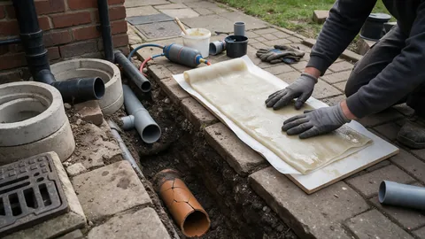
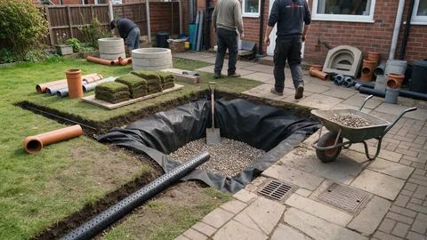

What we do
Drains, start to finish.
Six kinds of job, and most weeks they turn into each other. Somebody rings about a slow toilet, we clear it, the camera shows a cracked joint, and three weeks later we are lining that length. Here is each of them on its own.
The six
One at a time.
 Generated photo
Generated photoBlocked drains and toilets
Rodded, jetted and running again, then a look down it to see what caused it. Most of what we pull out is wipes, fat or roots.
 Generated photo
Generated photoDrain camera surveys
A camera down the run so you can see the inside of the pipe instead of guessing. Footage and a plain written report after.

Generated photoDrain repairs and relining
Cracks, open joints and roots put right from inside the pipe where we can, with a patch or a liner cured in place.

Generated photoSoakaways and land drainage
Rainwater taken away from the house and the lawn. We test what the ground actually does before anybody prices the dig.
 Generated photo
Generated photoGully and gutter outlet clearing
The silt out of the gully pot and the outlet flushed through, so the downpipe stops running down the wall.
 Generated photo
Generated photoSeptic tank and cesspit help
The drainage side of it: the runs in and out, the chambers and the condition of the pipework. Emptying is a tanker job.
What we do not do
Worth saying out loud.
Emptying tanks
Septic tanks and cesspits need a licensed tanker to empty them and to take it away. We do the pipework, the chambers and the camera work. For emptying we will tell you to ring a tanker firm.
Inside plumbing
Taps, toilets, cisterns and the pipework inside the house are a plumber's trade. We pick it up at the trap and work outwards. If the blockage turns out to be a cistern, we will say so.
Pest control
Rats do get into drains through a break, and a survey is how it gets proved. Finding and fixing the break is ours. Dealing with the rats is somebody else's and we will say so.
Not sure which of those it is?
Most people are not, and that is fine. Tell us what it is doing and your postcode, and we will work it out when we lift the cover.